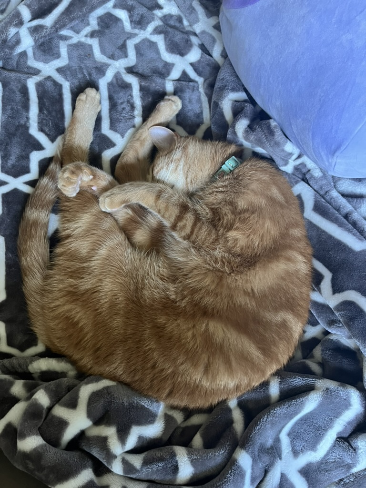

From this class, I hope to gain a better understanding of the Web Development process. I also am interested to see how the skills I gain from this class apply to the real world. I am also hoping to simply have fun and learn more about Computer Science. I do not take Computer Science too seriously (aka it won't be my job in the future), so I try to use it as a creative outlet of sorts. I enjoy how computer science makes me think differently about how to solve problems.

The picture is of my own cat, so I didn't get it from the internet. I put my mom's FB page instead because it does have pictures of my cat on it, but not this specific one.